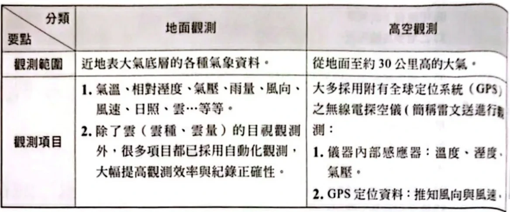
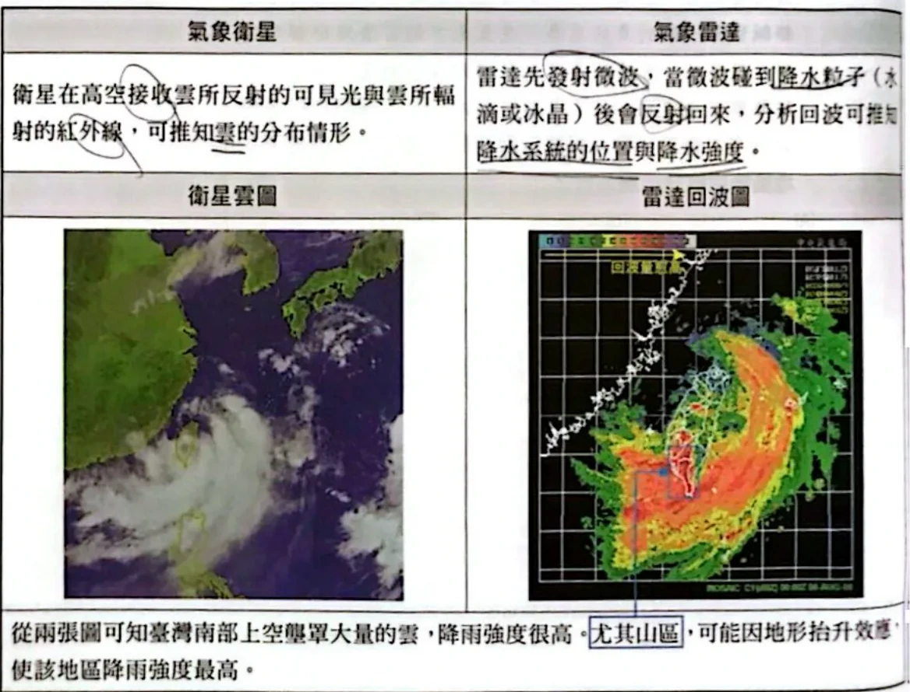
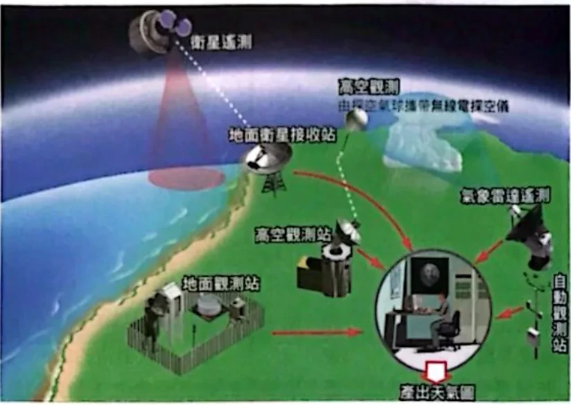
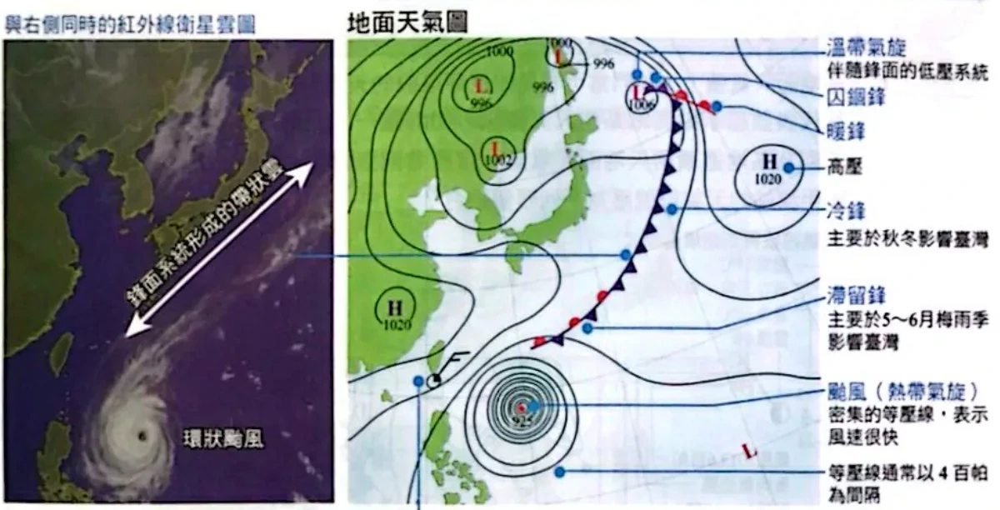
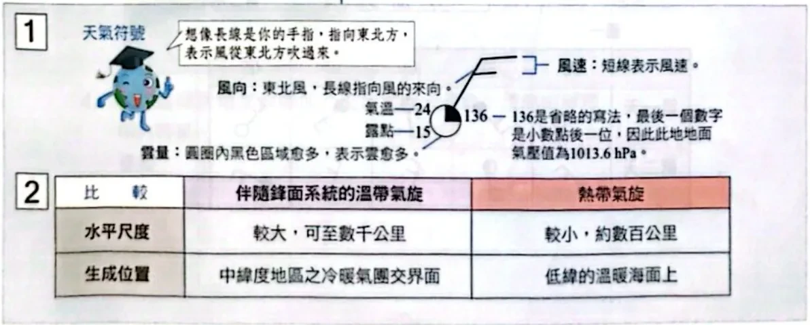
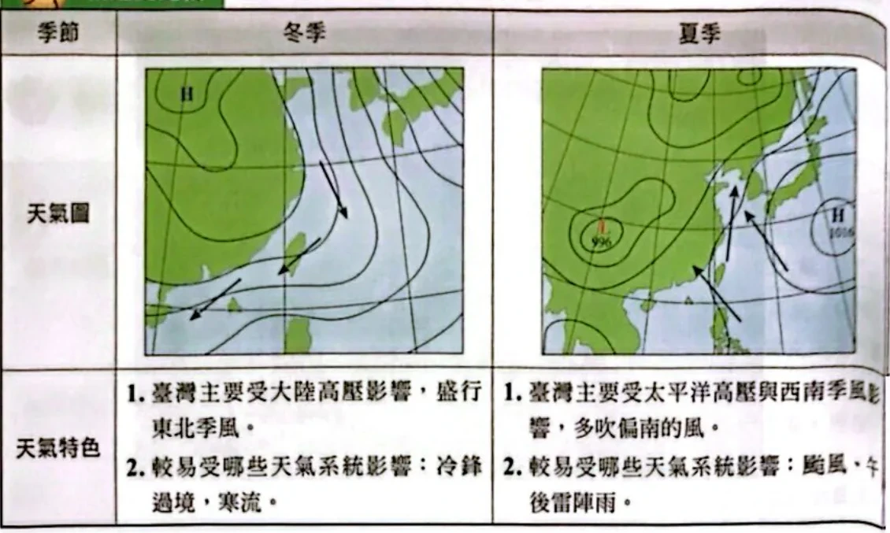
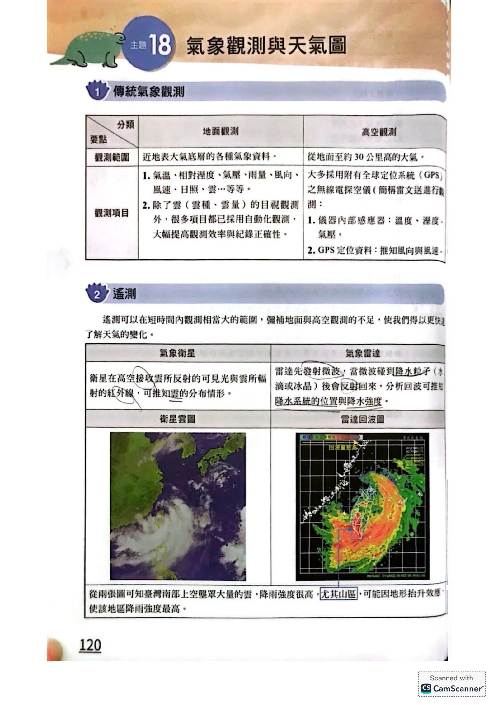

傳統氣象觀測

地面觀測測近地表大氣；高空觀測用雷文送（附GPS的無線電探空儀）測到約30公里高原講義PDF第18頁・印刷第120頁・點圖放大
遙測：氣象衛星與氣象雷達
- 遙測能在短時間觀測很大範圍，補足地面與高空觀測的空缺。

衛星收可見光、紅外線 → 看雲；雷達發微波、收降水粒子回波 → 看降水位置與強度原講義PDF第18頁・印刷第120頁・點圖放大
天氣圖怎麼來、怎麼讀

地面站、高空站、衛星、雷達、自動站的資料匯集後，才產出天氣圖原講義PDF第19頁・印刷第121頁・點圖放大
- 各種觀測資料匯集 → 分析繪製 → 產出天氣圖。
- 地面天氣圖上要找：高壓（H）、低壓（L）、鋒面、颱風、等壓線疏密。
- 等壓線通常每 4 百帕畫一條；愈密風愈強。

地面天氣圖：溫帶氣旋伴隨冷鋒、暖鋒、囚錮鋒、滯留鋒；颱風是等壓線密集的圓；等壓線通常每 4 百帕一條原講義PDF第19頁・印刷第121頁・點圖放大
天氣符號

天氣符號：長線指向風的來向、短線表風速，圓內塗黑愈多雲愈多；136 表示 1013.6 hPa原講義PDF第19頁・印刷第121頁・點圖放大
- 長線＝風的來向（指向東北 → 東北風）；短線（羽）＝風速。
- 圓圈內塗黑愈多 → 雲量愈多（全白晴、全黑陰）。
- 左上是氣溫、左下是露點；中間符號是現在天氣（例：‧ 為雨）。
- 右上的氣壓省略寫法：136 → 1013.6 hPa；240 → 1024.0 hPa（只寫十位、個位與小數一位）。
溫帶氣旋與熱帶氣旋
臺灣冬季與夏季天氣圖

冬季：大陸高壓 → 東北季風、冷鋒、寒流；夏季：太平洋高壓與西南季風 → 偏南風、颱風、午後雷陣雨原講義PDF第20頁・印刷第122頁・點圖放大
小試身手1：天氣符號
在地面天氣圖上常可看見如豆芽菜般的天氣符號，代表該測站某些天氣資訊，如附圖一。附圖二則為某地連續兩天地面天氣圖，請參考兩張附圖，判斷甲測站的天氣符號應為下列哪個組合？
看答案與詳解收起
答C。
解- 第一天：甲在冷鋒前方（東南側）、低壓的南方，是暖區。附近等壓線東北—西南走向、低壓在西北 → 梯度力往西北 → 右偏後往北吹 → 吹偏南風；冷鋒還沒到，雲不多。
- 第二天：冷鋒已經掃過甲（甲在鋒面西北側）→ 風轉成偏北風，冷空氣抬升暖空氣，天空多雲、陰雨。
- 看選項（長線指向風的來向，圓內黑色表雲量）：(C) 第一天長線朝下＝南風、雲量少；第二天長線朝上＝北風、圓全黑＝陰天 → 符合。
- 其他選項：(A)(E) 第一天是西風、西北風；(B) 第一天已全陰、第二天南風；(D) 第一天西北風，都不合。
小試身手2–4：衛星雲圖
附圖一與二分別為 2019 年 10 月 27 日中午 12 時東亞地區的可見光衛星雲圖與紅外線衛星雲圖。臺灣北方有一帶狀雲系從日本東方海域延伸到大陸；已知可見光雲圖上雲愈白代表雲愈厚，紅外線雲圖上雲愈白代表雲頂愈高。
關於附圖中 A 區域與 B 區域中雲的特色敘述，何者正確？
(A) A 區域應為高壓帶，地面氣流輻合，形成雲雨天氣 (B) B 區域應該有旺盛的上升氣流，形成厚且高聳的積狀雲 (C) A 區域的雲頂比 B 區域高 (D) A、B 兩區域的雲均為薄雲 (E) 兩地的雲底一樣低
看答案與詳解收起
答B。
解- A：可見光偏白（厚），紅外線暗（雲頂低、溫度高）→ 又厚又低的雲（層狀雲）。
- B：可見光白、紅外線也白 → 又厚、雲頂又高 → 旺盛上升氣流形成的積雨雲（B 對）。
- (A) 高壓是地面輻散、下沉，不會輻合成雲雨 ✗。(C) A 雲頂較低 ✗。(D) 兩區在可見光都不暗，不是薄雲 ✗。(E) 兩種雲圖都只看得到雲頂，無法判斷雲底 ✗。
小結可見光看厚薄、紅外線看高低；兩張都白 → 積雨雲。
與衛星雲圖同時，下列哪一張圖為當時日本區域的地面天氣圖？
看答案與詳解收起
答B。
解- 雲圖上，帶狀雲系從日本東南方海上一路延伸到大陸，B 框在九州、四國南方海上；日本本州上空大致無雲。
- 帶狀雲系＝鋒面 → 選有鋒面的 (B) 或 (D)。
- (D) 的鋒面橫跨本州陸地，雲帶應壓在日本上空，與雲圖不合；(B) 的鋒面在日本南方海上，與雲帶位置相符。
- (A) 是颱風（應是一團圓形雲），(C)(E) 無鋒面，都不符。
利用這兩張衛星雲圖能否畫出地面天氣圖？請簡短解釋你的答案。
看答案與詳解收起
答不能。衛星雲圖只能看出雲的分布與雲頂高低，看不出地面的氣壓數值；畫地面天氣圖需要各地測站的氣壓等觀測資料，才能畫等壓線、定出高低壓中心。
解地面天氣圖的核心是等壓線，而氣壓要由地面測站實際量測。衛星只能輔助判斷鋒面、颱風等雲系的位置，不能單獨畫出天氣圖。
小試身手5–6：認季節、認雨型
附圖為臺灣不同時期之地面天氣圖。關於 4 張圖的可能月份配對，下列何者正確？
| 選項 | (A) | (B) | (C) | (D) | (E) |
|---|
| 圖一 | 7月 | 11月 | 1月 | 6月 | 11月 |
|---|
| 圖二 | 6月 | 6月 | 5月 | 5月 | 10月 |
|---|
| 圖三 | 9月 | 9月 | 12月 | 9月 | 1月 |
|---|
| 圖四 | 12月 | 7月 | 11月 | 12月 | 7月 |
|---|
看答案與詳解收起
答B。
解- 圖一：大陸上有 1032、1036 hPa 強大冷高壓 → 冬季（11～1月）。
- 圖二：鋒面從華南經臺灣附近延伸到日本 → 梅雨季（5～6月）。
- 圖三：菲律賓東方有颱風 → 夏、秋（9月合理；12、1 月極少）。
- 圖四：大陸上是 996 hPa 低壓、太平洋高壓在東 → 夏季（7月）。
- 只有 (B) 11、6、9、7 月全部符合。
小結冷高壓＝冬；帶狀鋒面＝梅雨；颱風＝夏秋；大陸低壓＝盛夏。
附圖為某時刻雷達回波圖與當日累積雨量圖，請問當日最有可能是哪一張天氣圖中臺灣的天氣情形？請解釋你的判斷依據。
看答案與詳解收起
答圖二（梅雨季的滯留鋒）。
解- 雷達回波呈西南—東北走向的長帶狀，橫跨臺灣與臺灣海峽 → 這是鋒面雨帶的形狀，不是颱風的螺旋狀，也不是零星的午後雷陣雨。
- 累積雨量圖顯示臺灣大範圍都有雨，中北部山區最多。
- 四張圖中只有圖二有鋒面（滯留鋒）通過臺灣附近 → 選圖二。
小結雨帶形狀：長帶狀＝鋒面；螺旋狀＝颱風；零星點狀＝熱對流。
本單元整理
下一篇是單元 4 的歷屆試題與關鍵考題，把 4-1～4-4 全部混在一起練。
核對原講義全頁（地科2 PDF18–22）
本節對應印刷120–124頁（主題18 氣象觀測與天氣圖，含小試身手1–6）。原頁有手寫答案與紅筆筆記；本頁答案一律重新判讀。

PDF第18頁／印刷第120頁 PDF第19頁／印刷第121頁
PDF第19頁／印刷第121頁 PDF第20頁／印刷第122頁
PDF第20頁／印刷第122頁 PDF第21頁／印刷第123頁
PDF第21頁／印刷第123頁 PDF第22頁／印刷第124頁
PDF第22頁／印刷第124頁